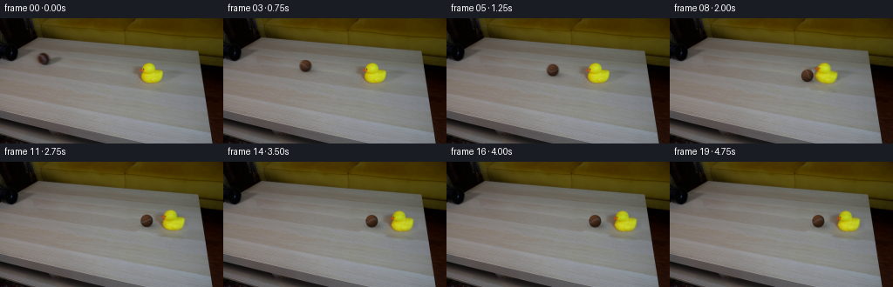
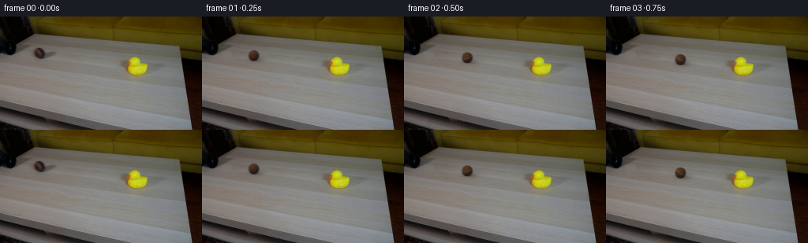

候选 01 · 2026-11-08T22:00:07.105923+00:00 · 点开播放与检查图
inspection.png

transition_check.png

代码变化
--- 上一保存版本
+++ 本次保存版本
@@ -0,0 +1,208 @@
+from pathlib import Path
+import math
+import numpy as np
+from PIL import Image, ImageDraw
+import cv2
+from scipy import sparse
+from scipy.sparse.linalg import spsolve
+from scipy.ndimage import gaussian_filter
+import artifact_io
+
+ROOT = Path(__file__).resolve().parent
+H, W = 144, 256
+SRC = np.asarray(Image.open(ROOT / 'first_frame.png').convert('RGB'), dtype=np.float64)
+Y, X = np.mgrid[:H, :W]
+
+def polygon(points):
+ im = Image.new('L', (W, H))
+ ImageDraw.Draw(im).polygon(points, fill=255)
+ return np.asarray(im) > 0
+
+ball_hole = polygon([(42,39),(48,37),(55,38),(59,42),(70,43),(74,48),(72,52),
+ (65,55),(56,58),(47,57),(42,53),(39,46)])
+duck_hole = polygon([(152,53),(160,51),(164,48),(176,49),(180,55),(182,57),
+ (190,57),(193,62),(191,71),(189,80),(185,85),(168,85),
+ (156,81),(150,72),(149,61)])
+
+# Restore occluded wood using texture sampled only from this photograph. A
+# Dirichlet solve preserves its low-contrast grain and matches every boundary.
+def restore(im, hole, prohibited):
+ ring = cv2.dilate(hole.astype(np.uint8), np.ones((7,7),np.uint8)).astype(bool) & ~hole
+ yy, xx = np.where(ring)
+ pts = np.stack([np.ones(len(xx)), (xx-xx.mean())/30, (yy-yy.mean())/30],axis=1)
+ best = None
+ region_y,region_x = np.where(hole | ring)
+ for dx in range(-99,100,3):
+ if abs(dx)<27: continue
+ for dy in range(-20,21):
+ xx2,yy2 = region_x+dx,region_y+dy
+ if xx2.min()<23 or xx2.max()>230 or yy2.min()<30 or yy2.max()>99: continue
+ if prohibited[yy2,xx2].any(): continue
+ # Every donor point must lie on the tabletop, not on the couch.
+ if np.any(yy2 < 20 + .086*xx2): continue
+ samples=im[yy+dy,xx+dx]
+ co=np.linalg.lstsq(pts,im[yy,xx]-samples,rcond=None)[0]
+ err=im[yy,xx]-samples-pts@co
+ score=np.mean(err**2) + .01*np.mean(co[1:]**2)
+ if best is None or score<best[0]: best=(score,dx,dy)
+ _,dx,dy=best
+ guide=im[np.clip(Y+dy,0,H-1),np.clip(X+dx,0,W-1)]
+ ys,xs=np.where(hole)
+ ids=np.full((H,W),-1,dtype=int); ids[ys,xs]=np.arange(len(xs))
+ rows=[];cols=[];vals=[]
+ rhs=np.zeros((len(xs),3))
+ for i,(y,x) in enumerate(zip(ys,xs)):
+ rows.append(i);cols.append(i);vals.append(4.)
+ for oy,ox in [(0,1),(0,-1),(1,0),(-1,0)]:
+ ny,nx=y+oy,x+ox
+ if hole[ny,nx]:
+ rows.append(i);cols.append(ids[ny,nx]);vals.append(-1.)
+ else: rhs[i]+=im[ny,nx]-guide[ny,nx]
+ mat=sparse.csr_matrix((vals,(rows,cols)),shape=(len(xs),len(xs)))
+ correction=spsolve(mat,rhs)
+ result=im.copy();result[ys,xs]=guide[ys,xs]+correction
+ return result, {'offset':[dx,dy], 'boundary_mse':float(best[0])}
+
+CLEAN_BALL, info_ball = restore(SRC,ball_hole,ball_hole|duck_hole)
+CLEAN, info_duck = restore(CLEAN_BALL,duck_hole,ball_hole|duck_hole)
+DUCK_DELTA = CLEAN_BALL-CLEAN
+# Separate diffuse tabletop shadow/reflection from the rigid yellow silhouette.
+chroma = np.maximum(SRC[:,:,0],SRC[:,:,1])-SRC[:,:,2]
+body = (chroma>48)&(X>158)&(X<190)&(Y>=50)&(Y<75)
+body = cv2.dilate(body.astype(np.uint8),np.ones((3,3),np.uint8)).astype(float)
+body = gaussian_filter(body,.6)
+DUCK_BODY = DUCK_DELTA*body[:,:,None]
+DUCK_SHADE = DUCK_DELTA-DUCK_BODY
+
+# World motion projected onto the table. Both bodies remain on one straight
+# line. The lighter rubber object slides and rocks after a dissipative impact.
+BX0, BY0 = 50.3, 46.6
+SLOPE = .177
+IMPACT_X = 155.1
+V0 = 60.0
+DRAG0 = 5.0
+TC = (V0-math.sqrt(V0*V0-2*DRAG0*(IMPACT_X-BX0)))/DRAG0
+VIN = V0-DRAG0*TC
+BALL_V = VIN*.43
+DUCK_V = VIN*.78
+BALL_A = 16.0
+DUCK_A = 25.0
+
+def slide(v,a,t):
+ t=np.clip(t,0,v/a)
+ return v*t-.5*a*t*t
+
+def motion(t):
+ if t<=TC:
+ bx=BX0+V0*t-.5*DRAG0*t*t
+ return bx,0.,0.,0.
+ q=t-TC
+ bx=IMPACT_X+slide(BALL_V,BALL_A,q)
+ dx=slide(DUCK_V,DUCK_A,q)
+ # A short backward lean followed by damped rocking, with no sustained spin.
+ tilt=.29*math.exp(-2.9*q)*math.sin(9.0*q)
+ lift=.7*math.exp(-4.2*q)*max(0,math.sin(9.0*q))
+ return bx,dx,tilt,lift
+
+def affine_about(px,py,dx,dy,angle,scale=1):
+ c=math.cos(angle)*scale;s=math.sin(angle)*scale
+ return np.array([[c,-s,px+dx-c*px+s*py],
+ [s,c,py+dy-s*px-c*py]],np.float64)
+
+def warp_delta(arr,mat):
+ return cv2.warpAffine(arr,mat,(W,H),flags=cv2.INTER_LINEAR,borderMode=cv2.BORDER_CONSTANT)
+
+# Analytic felt sphere, shaded in camera coordinates. Its stitched seam and
+# microscopic albedo texture are attached to the sphere, not to the camera.
+SS=4
+
+def ball_layer(bx,phase,opacity=1.0):
+ cy=BY0+SLOPE*(bx-BX0)
+ radius=6.65*(1+.00045*(bx-BX0))
+ x0=max(0,int(bx-radius-5));x1=min(W,int(bx+radius+10))
+ y0=max(0,int(cy-radius-4));y1=min(H,int(cy+radius+8))
+ yy,xx=np.mgrid[y0*SS:y1*SS,x0*SS:x1*SS].astype(float)
+ xx=(xx+.5)/SS-.5; yy=(yy+.5)/SS-.5
+ nx=(xx-bx)/radius; ny=(yy-cy)/(radius*1.025)
+ rr=nx*nx+ny*ny
+ nz=np.sqrt(np.maximum(0,1-rr))
+ # Orientation: rightward rolling corresponds to rotation around the
+ # horizontal table tangent perpendicular to the trajectory.
+ axis=np.array([SLOPE,-1.,-.27]); axis/=np.linalg.norm(axis)
+ n=np.stack([nx,ny,nz],axis=-1)
+ co=math.cos(phase);si=math.sin(phase)
+ nobj=n*co-np.cross(axis,n)*si+np.sum(n*axis,axis=-1)[...,None]*axis*(1-co)
+ u,v,w=nobj[...,0],nobj[...,1],nobj[...,2]
+ # A closed wavy seam encircles a tennis ball in the familiar two-lobed form.
+ lon=np.arctan2(w,u)
+ latitude=np.arcsin(np.clip(v,-1,1))
+ dist=latitude-.51*np.sin(2*lon+.8)
+ seam=np.exp(-.5*(dist/.080)**2)
+ # Fixed high frequency 3D texture gives a photographic fuzzy surface.
+ grain=(np.sin(99*u+71*v-55*w)+np.sin(164*u-113*v+135*w)
+ +np.sin(241*u+167*v+91*w))/3
+ fleck=np.sin(37*u-31*v+23*w)*np.sin(62*u+49*v-37*w)
+ albedo=np.empty((*rr.shape,3),float)
+ brown=np.array([87.,55.,36.])
+ stitch=np.array([106.,98.,93.])
+ albedo[:]=brown
+ albedo+=(stitch-brown)*(.80*seam)[...,None]
+ albedo+=(grain*4+fleck*2)[...,None]
+ light=np.array([-.36,-.63,.69]); light/=np.linalg.norm(light)
+ diffuse=np.maximum(0,nx*light[0]+ny*light[1]+nz*light[2])
+ lighting=.44+.53*diffuse
+ lighting*=.88+.12*np.clip((bx-BX0)/30,0,1)
+ color=albedo*lighting[...,None]
+ spec=.9*np.maximum(0,-.28*nx-.37*ny+.89*nz)**22
+ color+=spec[...,None]
+ aa=np.clip((1-np.sqrt(rr))*(radius*SS)+.5,0,1)*opacity
+ # Slight amber skylight at the perimeter softens, rather than outlines it.
+ color+=np.maximum(0,1-nz)[...,None]*np.array([2.,1.6,1.])
+ a=cv2.resize(aa, (x1-x0,y1-y0),interpolation=cv2.INTER_AREA)
+ rgb=cv2.resize(color*aa[...,None],(x1-x0,y1-y0),interpolation=cv2.INTER_AREA)
+ return (x0,y0,x1,y1),a,rgb,radius,cy
+
+def render(t):
+ bx,dx,tilt,lift=motion(t)
+ if t<=TC:
+ frame=CLEAN_BALL.copy()
+ else:
+ frame=CLEAN.copy()
+ sc=1+.0005*dx
+ shade_matrix=affine_about(174,73,dx,SLOPE*dx,0,sc)
+ body_matrix=affine_about(174,73,dx,SLOPE*dx-lift,tilt,sc)
+ frame+=warp_delta(DUCK_SHADE,shade_matrix)
+ frame+=warp_delta(DUCK_BODY,body_matrix)
+ phase=(bx-BX0)/6.9+.62
+ bounds,a,rgb,r,cy=ball_layer(bx,phase)
+ # Source lighting casts soft shadows toward the right of the ball.
+ sx=bx+3.5; sy=cy+r*.75
+ shadow=np.exp(-.5*(((X-sx)/(r*.99))**2+((Y-sy)/(r*.40))**2))*.22
+ contact=np.exp(-.5*(((X-bx-.7)/(r*.58))**2+((Y-cy-r*.87)/.93)**2))*.22
+ frame*= (1-shadow-contact)[...,None]
+ x0,y0,x1,y1=bounds
+ frame[y0:y1,x0:x1]=frame[y0:y1,x0:x1]*(1-a[...,None])+rgb
+ return frame
+
+def main():
+ out=[SRC.astype(np.uint8)]
+ # Short fixed exposure preserves readable contact at the specified 4 fps.
+ for i in range(1,20):
+ t=i/4
+ images=[render(t+offset) for offset in np.linspace(-.018,.018,5)]
+ out.append(np.clip(np.mean(images,axis=0),0,255).round().astype(np.uint8))
+ frames=np.stack(out)
+ artifact_io.save(frames,ROOT)
+ temp=ROOT/'.tmp';temp.mkdir(exist_ok=True)
+ Image.fromarray(np.clip(CLEAN,0,255).astype(np.uint8)).save(temp/'restored_table.png')
+ np.save(temp/'generated_rgb.npy',frames)
+ import json
+ diagnostics={'ball_fill':info_ball,'duck_fill':info_duck,'collision_time':TC,
+ 'states':[dict(frame=i,t=i/4,x=motion(i/4)[0],duck_dx=motion(i/4)[1],
+ tilt=motion(i/4)[2]) for i in range(20)]}
+ (temp/'numeric_checks.json').write_text(json.dumps(diagnostics,indent=2))
+ print(json.dumps(diagnostics,indent=2))
+ assert frames.shape==(20,144,256,3) and frames.dtype==np.uint8
+ assert np.array_equal(frames[0],SRC.astype(np.uint8))
+
+if __name__=='__main__': main()
命令 3 · 2026-11-08T21:54:51.472742+00:00/bin/bash -lc "python - <<'PY'
from PIL import Image
import numpy as np
im=np.array(Image.open('first_frame.png'))
print('mode',Image.open('first_frame.png').mode,'range',im.reshape(-1,3).min(0),im.reshape(-1,3).max(0))
print('samples')
for y in [0,10,20,25,30,35,40,45,50,55,60,65,70,75,80,90,100,110,120,130,140]:
print(y,[(x,im[y,x,:3].tolist()) for x in [0,10,20,30,40,45,50,55,60,70,90,120,150,165,175,185,195,210,230,245]])
for region in [(0,0,100,70),(145,43,203,83)]:
x0,y0,x1,y1=region
print('\\nCROP',region,'LUMINANCE')
gr=im[y0:y1,x0:x1,:3]@[.21,.72,.07]
chars=' .,:;irsXA253hMHGS#9B&@'
for y,row in enumerate(gr):
print('%02d '%(y+y0)+''.join(chars[min(len(chars)-1,int(p/210*len(chars)))] for p in row))
PY"exit 0 命令 8 · 2026-11-08T22:00:06.078206+00:00/bin/bash -lc "cat > generate.py <<'PY'
from pathlib import Path
import math
import numpy as np
from PIL import Image, ImageDraw
import cv2
from scipy import sparse
from scipy.sparse.linalg import spsolve
from scipy.ndimage import gaussian_filter
import artifact_io
ROOT = Path(__file__).resolve().parent
H, W = 144, 256
SRC = np.asarray(Image.open(ROOT / 'first_frame.png').convert('RGB'), dtype=np.float64)
Y, X = np.mgrid[:H, :W]
def polygon(points):
im = Image.new('L', (W, H))
ImageDraw.Draw(im).polygon(points, fill=255)
return np.asarray(im) > 0
ball_hole = polygon([(42,39),(48,37),(55,38),(59,42),(70,43),(74,48),(72,52),
(65,55),(56,58),(47,57),(42,53),(39,46)])
duck_hole = polygon([(152,53),(160,51),(164,48),(176,49),(180,55),(182,57),
(190,57),(193,62),(191,71),(189,80),(185,85),(168,85),
(156,81),(150,72),(149,61)])
# Restore occluded wood using texture sampled only from this photograph. A
# Dirichlet solve preserves its low-contrast grain and matches every boundary.
def restore(im, hole, prohibited):
ring = cv2.dilate(hole.astype(np.uint8), np.ones((7,7),np.uint8)).astype(bool) & ~hole
yy, xx = np.where(ring)
pts = np.stack([np.ones(len(xx)), (xx-xx.mean())/30, (yy-yy.mean())/30],axis=1)
best = None
region_y,region_x = np.where(hole | ring)
for dx in range(-99,100,3):
if abs(dx)<27: continue
for dy in range(-20,21):
xx2,yy2 = region_x+dx,region_y+dy
if xx2.min()<23 or xx2.max()>230 or yy2.min()<30 or yy2.max()>99: continue
if prohibited[yy2,xx2].any(): continue
# Every donor point must lie on the tabletop, not on the couch.
if np.any(yy2 < 20 + .086*xx2): continue
samples=im[yy+dy,xx+dx]
co=np.linalg.lstsq(pts,im[yy,xx]-samples,rcond=None)[0]
err=im[yy,xx]-samples-pts@co
score=np.mean(err**2) + .01*np.mean(co[1:]**2)
if best is None or score<best[0]: best=(score,dx,dy)
_,dx,dy=best
guide=im[np.clip(Y+dy,0,H-1),np.clip(X+dx,0,W-1)]
ys,xs=np.where(hole)
ids=np.full((H,W),-1,dtype=int); ids[ys,xs]=np.arange(len(xs))
rows=[];cols=[];vals=[]
rhs=np.zeros((len(xs),3))
for i,(y,x) in enumerate(zip(ys,xs)):
rows.append(i);cols.append(i);vals.append(4.)
for oy,ox in [(0,1),(0,-1),(1,0),(-1,0)]:
ny,nx=y+oy,x+ox
if hole[ny,nx]:
rows.append(i);cols.append(ids[ny,nx]);vals.append(-1.)
else: rhs[i]+=im[ny,nx]-guide[ny,nx]
mat=sparse.csr_matrix((vals,(rows,cols)),shape=(len(xs),len(xs)))
correction=spsolve(mat,rhs)
result=im.copy();result[ys,xs]=guide[ys,xs]+correction
return result, {'offset':[dx,dy], 'boundary_mse':float(best[0])}
CLEAN_BALL, info_ball = restore(SRC,ball_hole,ball_hole|duck_hole)
CLEAN, info_duck = restore(CLEAN_BALL,duck_hole,ball_hole|duck_hole)
DUCK_DELTA = CLEAN_BALL-CLEAN
# Separate diffuse tabletop shadow/reflection from the rigid yellow silhouette.
chroma = np.maximum(SRC[:,:,0],SRC[:,:,1])-SRC[:,:,2]
body = (chroma>48)&(X>158)&(X<190)&(Y>=50)&(Y<75)
body = cv2.dilate(body.astype(np.uint8),np.ones((3,3),np.uint8)).astype(float)
body = gaussian_filter(body,.6)
DUCK_BODY = DUCK_DELTA*body[:,:,None]
DUCK_SHADE = DUCK_DELTA-DUCK_BODY
# World motion projected onto the table. Both bodies remain on one straight
# line. The lighter rubber object slides and rocks after a dissipative impact.
BX0, BY0 = 50.3, 46.6
SLOPE = .177
IMPACT_X = 155.1
V0 = 60.0
DRAG0 = 5.0
TC = (V0-math.sqrt(V0*V0-2*DRAG0*(IMPACT_X-BX0)))/DRAG0
VIN = V0-DRAG0*TC
BALL_V = VIN*.43
DUCK_V = VIN*.78
BALL_A = 16.0
DUCK_A = 25.0
def slide(v,a,t):
t=np.clip(t,0,v/a)
return v*t-.5*a*t*t
def motion(t):
if t<=TC:
bx=BX0+V0*t-.5*DRAG0*t*t
return bx,0.,0.,0.
q=t-TC
bx=IMPACT_X+slide(BALL_V,BALL_A,q)
dx=slide(DUCK_V,DUCK_A,q)
# A short backward lean followed by damped rocking, with no sustained spin.
tilt=.29*math.exp(-2.9*q)*math.sin(9.0*q)
lift=.7*math.exp(-4.2*q)*max(0,math.sin(9.0*q))
return bx,dx,tilt,lift
def affine_about(px,py,dx,dy,angle,scale=1):
c=math.cos(angle)*scale;s=math.sin(angle)*scale
return np.array([[c,-s,px+dx-c*px+s*py],
[s,c,py+dy-s*px-c*py]],np.float64)
def warp_delta(arr,mat):
return cv2.warpAffine(arr,mat,(W,H),flags=cv2.INTER_LINEAR,borderMode=cv2.BORDER_CONSTANT)
# Analytic felt sphere, shaded in camera coordinates. Its stitched seam and
# microscopic albedo texture are attached to the sphere, not to the camera.
SS=4
def ball_layer(bx,phase,opacity=1.0):
cy=BY0+SLOPE*(bx-BX0)
radius=6.65*(1+.00045*(bx-BX0))
x0=max(0,int(bx-radius-5));x1=min(W,int(bx+radius+10))
y0=max(0,int(cy-radius-4));y1=min(H,int(cy+radius+8))
yy,xx=np.mgrid[y0*SS:y1*SS,x0*SS:x1*SS].astype(float)
xx=(xx+.5)/SS-.5; yy=(yy+.5)/SS-.5
nx=(xx-bx)/radius; ny=(yy-cy)/(radius*1.025)
rr=nx*nx+ny*ny
nz=np.sqrt(np.maximum(0,1-rr))
# Orientation: rightward rolling corresponds to rotation around the
# horizontal table tangent perpendicular to the trajectory.
axis=np.array([SLOPE,-1.,-.27]); axis/=np.linalg.norm(axis)
n=np.stack([nx,ny,nz],axis=-1)
co=math.cos(phase);si=math.sin(phase)
nobj=n*co-np.cross(axis,n)*si+np.sum(n*axis,axis=-1)[...,None]*axis*(1-co)
u,v,w=nobj[...,0],nobj[...,1],nobj[...,2]
# A closed wavy seam encircles a tennis ball in the familiar two-lobed form.
lon=np.arctan2(w,u)
latitude=np.arcsin(np.clip(v,-1,1))
dist=latitude-.51*np.sin(2*lon+.8)
seam=np.exp(-.5*(dist/.080)**2)
# Fixed high frequency 3D texture gives a photographic fuzzy surface.
grain=(np.sin(99*u+71*v-55*w)+np.sin(164*u-113*v+135*w)
+np.sin(241*u+167*v+91*w))/3
fleck=np.sin(37*u-31*v+23*w)*np.sin(62*u+49*v-37*w)
albedo=np.empty((*rr.shape,3),float)
brown=np.array([87.,55.,36.])
stitch=np.array([106.,98.,93.])
albedo[:]=brown
albedo+=(stitch-brown)*(.80*seam)[...,None]
albedo+=(grain*4+fleck*2)[...,None]
light=np.array([-.36,-.63,.69]); light/=np.linalg.norm(light)
diffuse=np.maximum(0,nx*light[0]+ny*light[1]+nz*light[2])
lighting=.44+.53*diffuse
lighting*=.88+.12*np.clip((bx-BX0)/30,0,1)
color=albedo*lighting[...,None]
spec=.9*np.maximum(0,-.28*nx-.37*ny+.89*nz)**22
color+=spec[...,None]
aa=np.clip((1-np.sqrt(rr))*(radius*SS)+.5,0,1)*opacity
# Slight amber skylight at the perimeter softens, rather than outlines it.
color+=np.maximum(0,1-nz)[...,None]*np.array([2.,1.6,1.])
a=cv2.resize(aa, (x1-x0,y1-y0),interpolation=cv2.INTER_AREA)
rgb=cv2.resize(color*aa[...,None],(x1-x0,y1-y0),interpolation=cv2.INTER_AREA)
return (x0,y0,x1,y1),a,rgb,radius,cy
def render(t):
bx,dx,tilt,lift=motion(t)
if t<=TC:
frame=CLEAN_BALL.copy()
else:
frame=CLEAN.copy()
sc=1+.0005*dx
shade_matrix=affine_about(174,73,dx,SLOPE*dx,0,sc)
body_matrix=affine_about(174,73,dx,SLOPE*dx-lift,tilt,sc)
frame+=warp_delta(DUCK_SHADE,shade_matrix)
frame+=warp_delta(DUCK_BODY,body_matrix)
phase=(bx-BX0)/6.9+.62
bounds,a,rgb,r,cy=ball_layer(bx,phase)
# Source lighting casts soft shadows toward the right of the ball.
sx=bx+3.5; sy=cy+r*.75
shadow=np.exp(-.5*(((X-sx)/(r*.99))**2+((Y-sy)/(r*.40))**2))*.22
contact=np.exp(-.5*(((X-bx-.7)/(r*.58))**2+((Y-cy-r*.87)/.93)**2))*.22
frame*= (1-shadow-contact)[...,None]
x0,y0,x1,y1=bounds
frame[y0:y1,x0:x1]=frame[y0:y1,x0:x1]*(1-a[...,None])+rgb
return frame
def main():
out=[SRC.astype(np.uint8)]
# Short fixed exposure preserves readable contact at the specified 4 fps.
for i in range(1,20):
t=i/4
images=[render(t+offset) for offset in np.linspace(-.018,.018,5)]
out.append(np.clip(np.mean(images,axis=0),0,255).round().astype(np.uint8))
frames=np.stack(out)
artifact_io.save(frames,ROOT)
temp=ROOT/'.tmp';temp.mkdir(exist_ok=True)
Image.fromarray(np.clip(CLEAN,0,255).astype(np.uint8)).save(temp/'restored_table.png')
np.save(temp/'generated_rgb.npy',frames)
import json
diagnostics={'ball_fill':info_ball,'duck_fill':info_duck,'collision_time':TC,
'states':[dict(frame=i,t=i/4,x=motion(i/4)[0],duck_dx=motion(i/4)[1],
tilt=motion(i/4)[2]) for i in range(20)]}
(temp/'numeric_checks.json').write_text(json.dumps(diagnostics,indent=2))
print(json.dumps(diagnostics,indent=2))
assert frames.shape==(20,144,256,3) and frames.dtype==np.uint8
assert np.array_equal(frames[0],SRC.astype(np.uint8))
if __name__=='__main__': main()
PY
python generate.py"exit 0